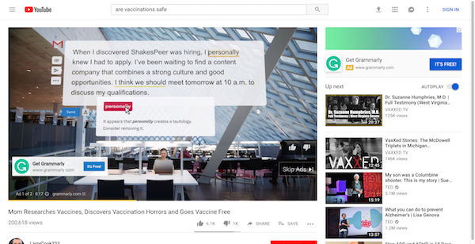

Windows 10: NSA reveals major flaw in Microsoft's code
Foldable phones are undeniably interesting — we finally have real phones that transform into tablets with larger
screens! — but 5G, the next generation of faster and more reliable cellular connectivity, has the potential to
truly change how we live and work, even if foldable phones end up becoming a fad.
U.S. Navy bans TikTok from government-issued mobile devices
Earlier this week the United States Navy banned the social media app TikTok from government-issued mobile
devices, saying the popular short video app represented a “cybersecurity threat”.
5G will be crazy fast, but it'll be worthless without unlimited data
Foldable phones are undeniably interesting — we finally have real phones that transform into tablets with larger
screens! — but 5G, the next generation of faster and more reliable cellular connectivity, has the potential to
truly change how we live and work, even if foldable phones end up becoming a fad.
Self-driving trucks begin mail delivery test for U.S. Postal Service
The U.S. Postal Service on Tuesday started a two-week test transporting mail across three Southwestern states
using self-driving trucks, a step forward in the effort to commercialize autonomous vehicle technology for
hauling freight.
Amazon reportedly employs thousands of people to listen to your Alexa conversations
Not only is Alexa listening when you speak to an Echo smart speaker, an Amazon employee is potentially
listening, too.
Cows on Russian Farm Get Fitted with VR Goggles to Increase Milk Production
The VR headsets will hopefully relax the cows, offering them sun-filled summer views of green pastures.

YouTube Just Demonetized Anti-Vax Channels
After advertisers complained about programmatic ad placements on anti-vax videos, YouTube removed ads on videos
that advocate against vaccination.